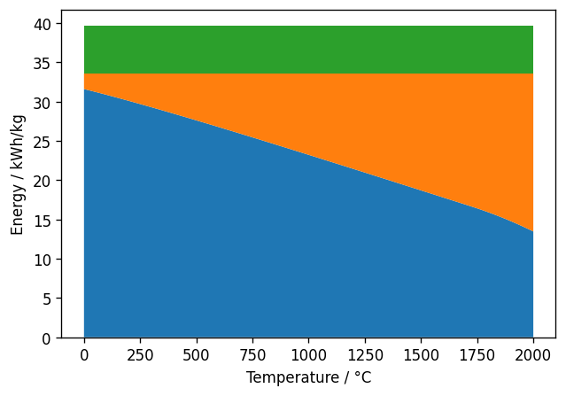

Thermodynamics of Hydrogen Production#
The minimal energy required to produce hydrogen from liquid water is given by the Higher Heating Value (HHV). The HHV is the sum of the difference between the enthalpies of products and educts (LHV: Lower Heating Value) and the Heat of Evaporation for water.
import gaspype as gp
#import numpy as np
#import matplotlib.pyplot as plt
lhv = gp.fluid({'H2': 1, 'O2': 1/2, 'H2O': -1}).get_H(25 + 273.15)
dh_v = 43990 # J/mol (heat of evaporation for water @ 25 °C)
hhv = lhv + dh_v
print(f'LHV: {lhv/1e3:.1f} kJ/mol')
print(f'HHV: {hhv/1e3:.1f} kJ/mol')
LHV: 241.8 kJ/mol
HHV: 285.8 kJ/mol
Thermodynamics also defines which part of the energy must be provided as work (e.g., electric power) and which part can be supplied as heat. This depends on temperature and pressure. For generating 1 bar of hydrogen the temperature dependency can be calculated as follows:
import numpy as np
import matplotlib.pyplot as plt
t = np.linspace(0, 2000, 128) # 0 to 2000 °C
p = 1e5 # Pa (=1 bar)
g_products = gp.fluid({'H2': 1, 'O2': 1/2, 'H2O': 0}).get_G(t + 273.15, p)
g_educts = gp.fluid({'H2': 0, 'O2': 0, 'H2O': 1}).get_G(t + 273.15, p)
work = g_products - g_educts # J/mol
heat = lhv - work # J/mol
fig, ax = plt.subplots(figsize=(6, 4), dpi=120)
ax.set_xlabel("Temperature / °C")
ax.set_ylabel("Energy / kWh/kg")
k = 1e-3 / 3600 / 0.002 # Conversion factor from J/mol to kWh/kg for hydrogen
ax.stackplot(t, k * work, k * heat, k * dh_v * np.ones_like(t))
[<matplotlib.collections.FillBetweenPolyCollection at 0x7f0e6cf26270>,
<matplotlib.collections.FillBetweenPolyCollection at 0x7f0e6d056850>,
<matplotlib.collections.FillBetweenPolyCollection at 0x7f0e6cf3ac10>]

Green is the heat of evaporation, orange the additional heat provided at the given temperature and blue the work.